Merchant Suites Café.
Valletta, capital of Malta, is classified as a UNESCO World Heritage Site. Therefore, it is almost impossible to modify the walls of any building, so I had to design the project with the actual building shape.
01. How did I start this project?
I searched for other inspirational pictures that looked similar to the one I already had, and also studied the current hotel design.
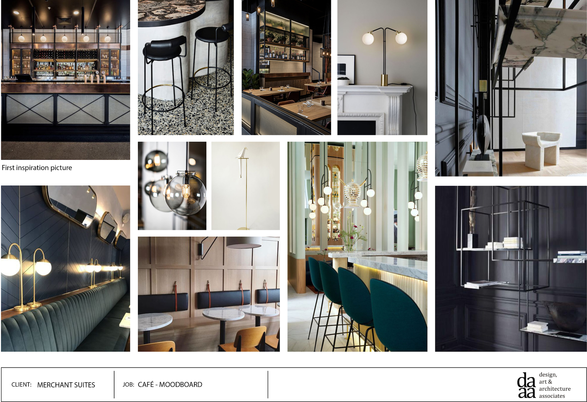02. How do I conceptualize?
As I could not remove any walls, I had to design bespoke furniture so they could fit properly in the space. At the same time I had to work on the layout, and incorporate all size regulations for the furniture.
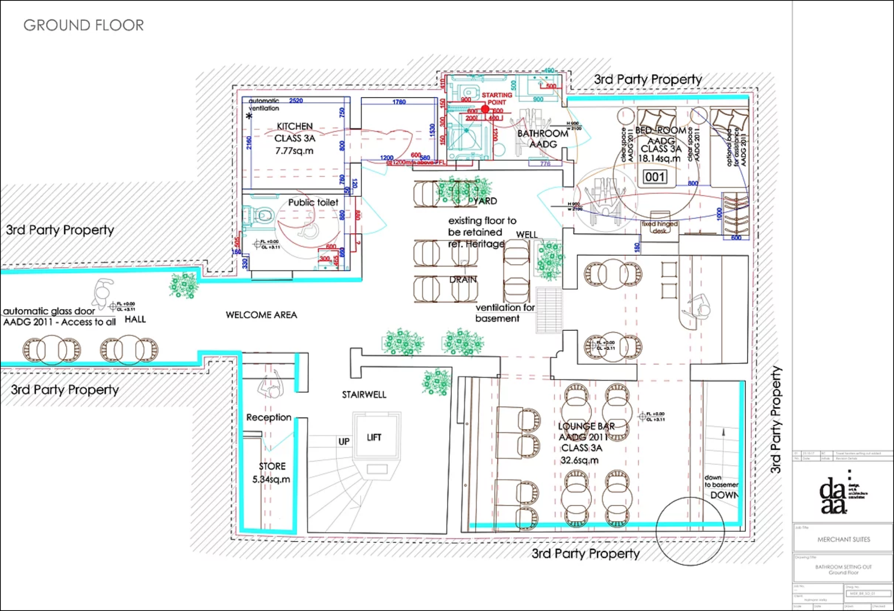Pictures of the existing space.
Pictures of the existing space.
03. How did I develop the technical drawing details?
Details are very important: materials, lighting, shape and how it is assembled. Construction workers have to understand quickly or the construction will be delayed.
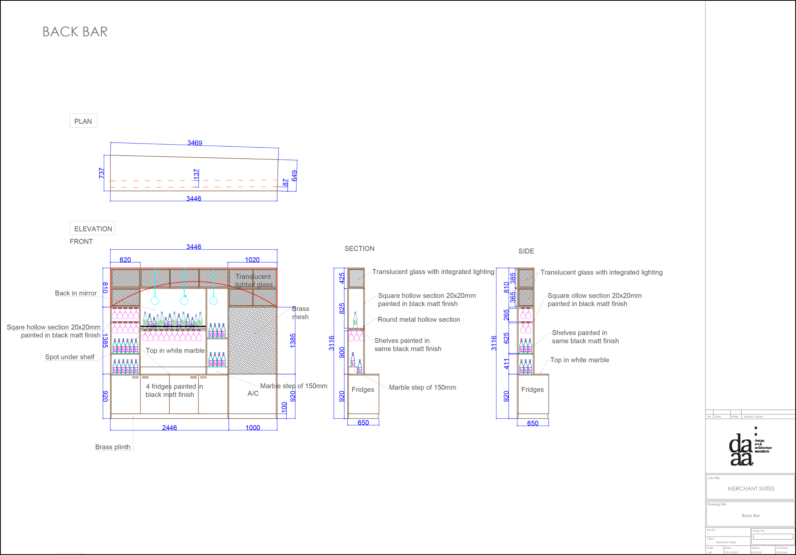 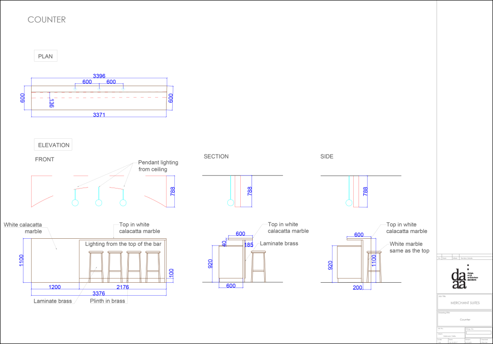 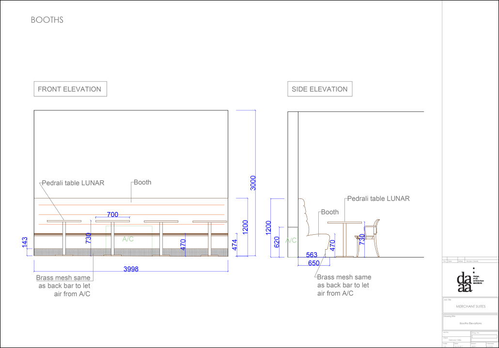 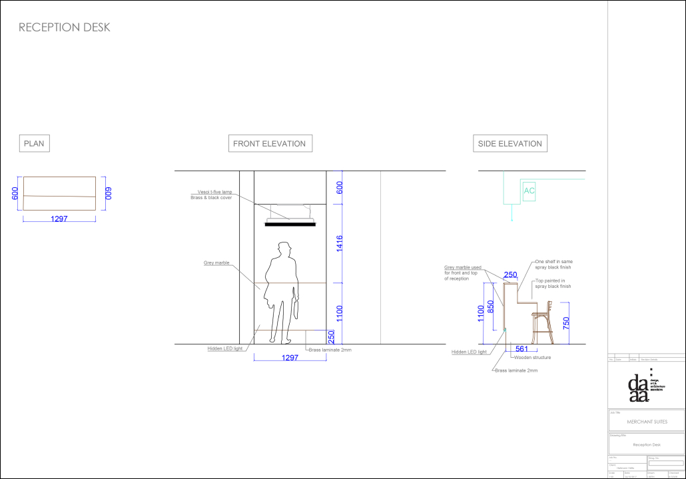The shelving was the most difficult furniture to explain as it contained a hidden door and had a back and front structure. I used colors so the workers would understand which part was the front and which was the back.
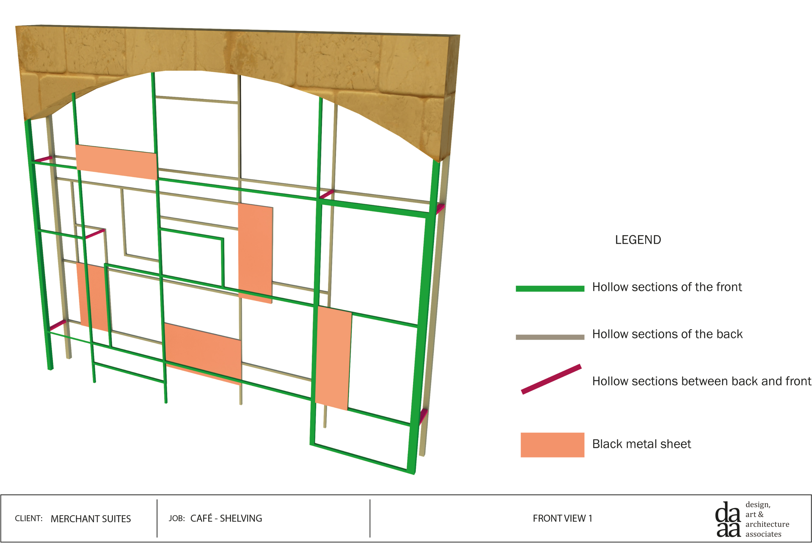04. How did I fill out the bill of quantities?
It was the first time for me working with this technique. I used the base of DAAA Haus’ bill of quantities and listed all the components needed for the café. I also created a design booklet with references and pictures of listed elements in the bill of quantities.
 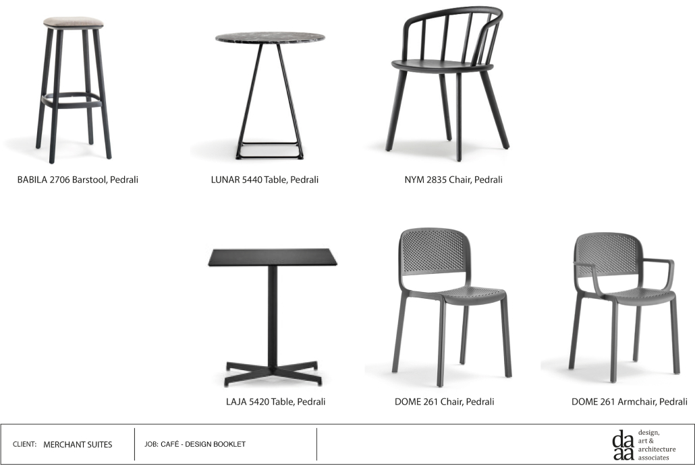
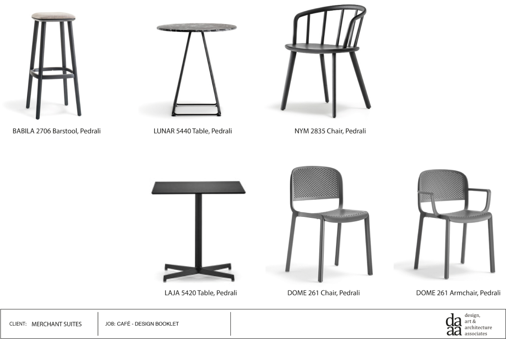
Finalizing of the project
The furniture production and construction site started while I was working on the design.
- I visited the construction site with DAAA Haus.
- We checked together how the site was progressing and took pictures if something was wrong. The construction kept going on after I left the company and was completed in 2018.
 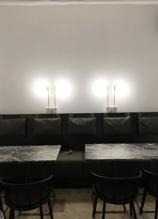
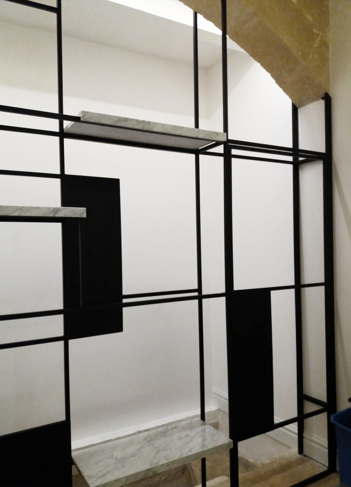
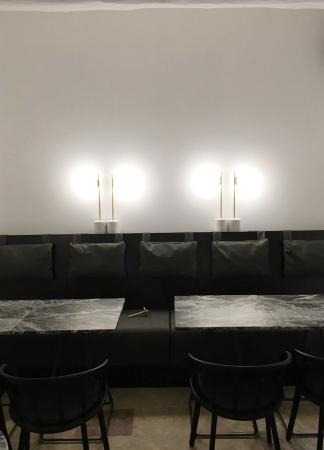
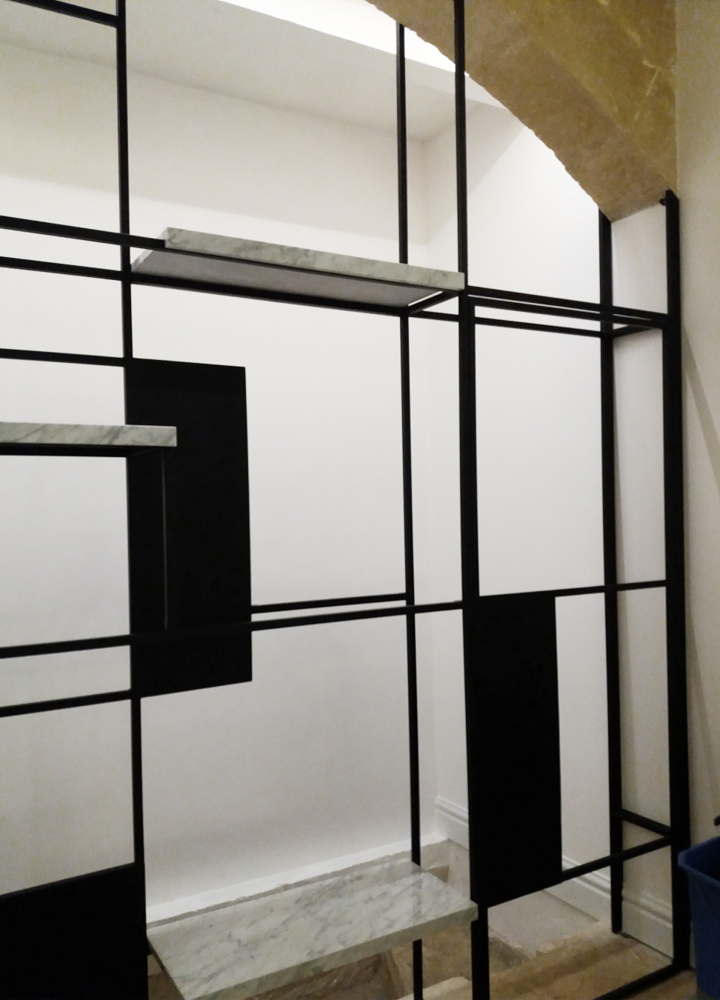